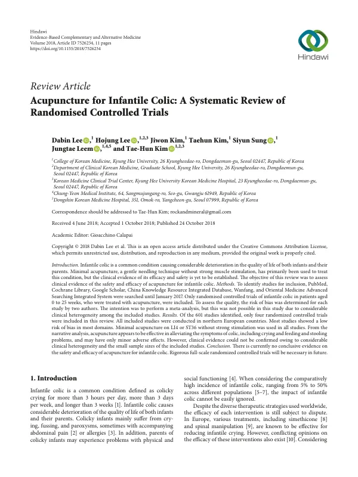

Acupuncture for Infantile Colic: A Systematic Review of Randomised Controlled Trials
Lee D, Lee H, Kim J, Kim T, Sung S, Leem J, Kim TH
Evidence-Based Complementary and Alternative Medicine 2018(1):7526234

첫 장 · 오픈액세스First page · open access
논문 소개Summary
영아산통에 침 치료를 쓴 무작위 대조시험을 모은 체계적 문헌고찰입니다. 영아산통은 하루 3시간, 주 3일, 3주를 넘겨 이어지는 심한 울음으로 유병률이 인구에 따라 5%에서 50%에 이릅니다. 2017년 1월까지 여섯 개 데이터베이스를 검색해 601편 가운데 무작위 대조시험 4편이 포함되었고 모두 북유럽에서 수행된 연구였습니다. 네 연구 모두 합곡이나 족삼리에 강한 자극 없이 놓는 최소 침술을 썼고 비뚤림 위험은 대부분의 영역에서 낮았습니다. 서술적 분석에서는 울음과 수유·배변 문제가 나아지고 이상반응은 경미해 보였으나, 임상적 이질성이 커서 메타분석을 하지 못했습니다. 저자들은 현재로서는 확정적인 근거가 없다고 결론지었습니다.
A systematic review of randomised controlled trials of acupuncture for infantile colic — defined as colicky crying for more than three hours a day, more than three days a week, for longer than three weeks, with a prevalence ranging from 5% to 50% across populations. Six databases were searched to January 2017; of 601 records, four randomised controlled trials were included, all conducted in northern European countries. All four used minimal acupuncture at LI4 or ST36 without strong stimulation, and risk of bias was low in most domains. Narrative analysis suggested improvement in crying and in feeding and stooling problems with only minor adverse effects, but considerable clinical heterogeneity made meta-analysis impossible. The authors conclude that there is currently no conclusive evidence.
인용Cite
Lee D, Lee H, Kim J, Kim T, Sung S, Leem J, Kim TH. Acupuncture for Infantile Colic: A Systematic Review of Randomised Controlled Trials. Evidence-Based Complementary and Alternative Medicine. 2018;2018(1):7526234. doi:10.1155/2018/7526234